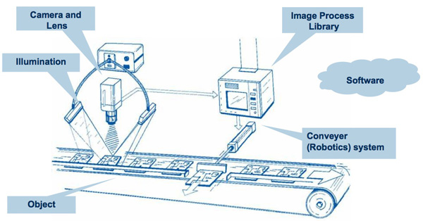

Test an AI inspection model on unseen parts
A model appears accurate on familiar images and misses defects when the lamp moves. Collect evidence of what it can handle before you give it any robot task.
A phone or webcam, two classes of ordinary bench objects and a consistent fixture. Start with the worked metrics and a rule from P45. For training use the linked Edge Impulse tutorial or a local equivalent. The acceptance exercise uses still images and decision logging.
Define a label that an inspector can verify
Choose two outcomes you can confirm by eye or with a gauge, such as washer present and washer missing from an empty fixture. Include an explicit path for invalid or uncertain images. A digital model only sees its camera input. Define what a wrong acceptance costs and record which class represents a fault.

Diagram by European Editors, scaled for the course. Original · CC BY-SA 4.0.


Photo by Lg123456, scaled for the course. Original · CC BY-SA 4.0.


Photo by Marc Auledas, scaled for the course. Original · CC BY-SA 4.0.

Keep a rule-based baseline from P45. Test the same set with both methods. Use a learned model only if it adds measurable value under the conditions you can reproduce.
Collect images without leaking the answer
- Take at least three separate capture sessions. Move the target and vary ordinary lighting between sessions within the intended operating range. Include an empty fixture and borderline cases. Record session, physical part, conditions and verified label.
- Assign complete sessions to training, validation and finished testing. If successive frames show the same part in the same pose, keep them together. Choose any confidence threshold while working with validation data. Set aside the final session until the model and rule are fixed.
- Train an image classifier for fixture-level decisions, or use the linked FOMO workflow to find object centres. FOMO provides location/count information at its output resolution. A separate measurement is needed for millimetres or precise contours.
Watch on YouTube · Watch detection on the device and note what the model outputs. Compare that with the measurement and reject/review rules you need. Edge Impulse Demonstration of FOMO: Constrained Object Detection on Embedded Devices · Edge AI and Vision Alliance.
Edge Impulse documentation · FOMO design and working examples.
Measure misses, false alarms and speed
Here positive means a defect or missing part. At one example threshold, a held-out session contained 10 defects and 40 normal frames. The system flagged 8 defects and 6 normal frames. Recall is 8/10 = 80%. Precision is 8/14 ≈ 57%. Two missed defects matter even though the overall correct count is 42/50 = 84%.
| Measure | Calculation | Record it per condition |
|---|---|---|
| Miss rate on defects | False negatives ÷ actual defects | Light, orientation and camera distance |
| False alarm rate | False positives ÷ actual normal | Lighting and changes to the fixture |
| Review rate | Uncertain ÷ all frames | Report what happened to uncertain cases |
| Latency | Decision timestamp − capture timestamp | Use a median and a worst observed or high-percentile time |
Now change the light, occlude a target, or move the camera slightly. Route unrecognisable, stale or slow frames to human review in the simulated cell. Report performance on these cases separately. If you run inference on a device, note the model version, input resolution and hardware.
Document what the robot can do with the result
Make a decision log containing frame ID, capture session, ground truth, model version, raw score, quality flag, latency and disposition. In a simulated cell, pass an acceptance or review request to the controller. Keep interlocks and motion permissions in the validated control design independently of the vision output.
T34 · Control signals, PLC scans and independent proof
T36 · Camera optics, calibration and stereo depth
T37 · Edge AI, dataset leakage and inspection metrics